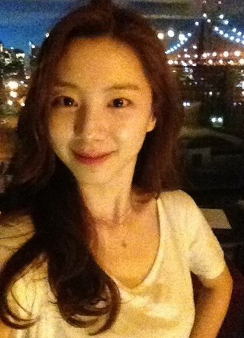

코에 있는 점이 매력 포인트이다. 커리어 측면에서 봤을땐 배우로서 연기력 자체가 부족한 것은 아니지만 딱히 흥행한 작품이 별로 없어서 예쁜 외모로 인해 셀럽으로서의 면모가 부각되는 편이다. 드라마나 영화에서의 활약보다는 버라이어티, 예능에서 보여준 털털한 모습이 더 주목받았다.
스타월드 소속사에서 1년 반의 연습생 시절을 거쳐, 2001년 12월 슈가로 데뷔했다. 예쁜데 그리 주목을 받지 못해 '걸그룹 중에 제일 예쁜데 왜 이렇게 안 뜨냐' 라는 반응이 많았다. 귀여운 외모 덕분에 아유미와 함께 예능 방송에 자주 출연했다. 하지만 슈가의 사실상 마지막 앨범이 된 3집 활동이 끝나고 2006년 5월에 스타월드와 계약이 만료되자 슈가를 탈퇴한 후, 기획사를 옮겨 연기자로 전업했다. 가수 생활을 하면서 그리 뛰어나지 못한 가창력 때문에 스트레스를 많이 받았다고 한다. 또한 어렸을 때부터 연기를 하는 것이 꿈이었다고 한다.